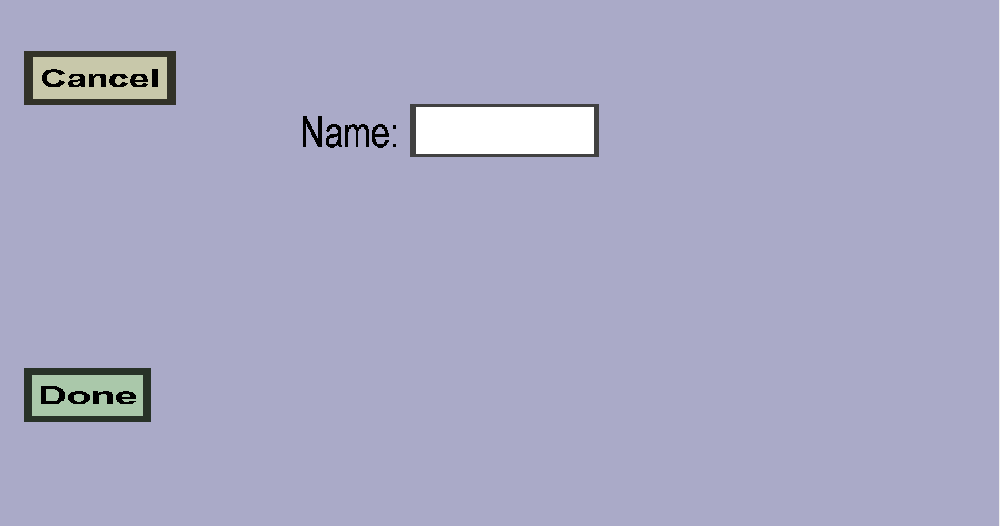

This menu can be used to edit custom damage sources, but there is currently not much to configure: just the name. Instead, you need to configure custom items or projectiles to use this custom damage source, and configure custom armor to resist this damage source. See this page for example usage.
